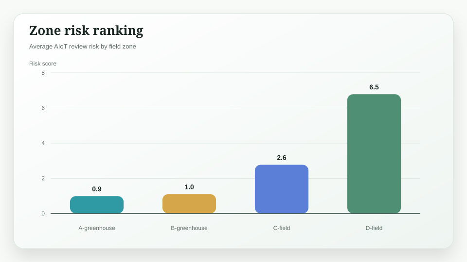

Project Case 03 / Smart Agriculture
Xiangxin AIoT Agriculture Platform
A completed AIoT agriculture prototype that generates field signals, classifies crop operating state, creates work orders, and benchmarks edge deployment latency.
Generated Results
| Metric | Result | Interpretation |
|---|---|---|
| Review alert precision | 0.79 | Share of review alerts that match true review state |
| Review alert recall | 1.00 | Share of true review states captured by the edge rule model |
| Edge latency reduction | 65.1% | Edge-first path versus cloud-only baseline |
| Generated work orders | 32 | Human-reviewable actions generated from sensor and vision signals |
Research Figures



What is actually implemented
The project now simulates hourly field sensing, scores crop stress, classifies operating states, creates work-order recommendations, evaluates alert precision and recall, and regenerates the AIoT dashboard figures.
Result interpretation
The strongest value is the operating loop: sensor signals and vision-inspired risk scores become traceable work orders instead of isolated model outputs.